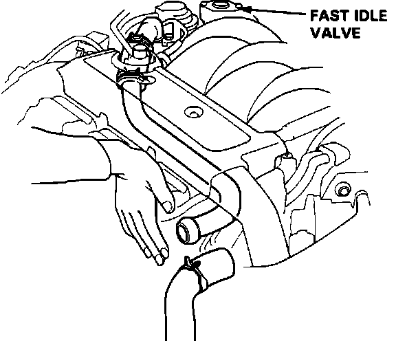

Auxiliary Air Valve (Idle Speed): Testing and Inspection
NOTE: The fast idle valve is factory adjusted; do NOT attempt to adjust or disassemble.
1. Before checking, engine coolant temperature must be below:
86 degrees F (30 degrees C)
Fast Idle Valve Checking:

2. Remove the inlet hose from the fast idle valve.
3. Start the engine and allow to idle.
4. Put your finger over the inlet and make sure that there is air flow (vacuum) present.
5. Allow engine to warm up to operating temperature.
6. Check that the valve is now completely closed.
7. Re-install the inlet hose to the fast idle valve.
If the fast idle valve fails either test, replace the fast idle valve assembly. If the valve is OK, reinstall the cover.